선배에게 묻던 것을, 휴대폰으로 바로
키워드 검색 건수 · 같은 질문이 계속 올라오고 있었습니다
배달 앱처럼 익숙한 구조로,
학생들이 많이 추천한 곳을 먼저 보여 줍니다.
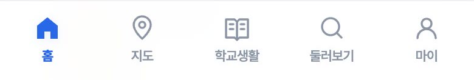
왜 좋은지, 얼마인지, 학교에서 얼마나 먼지
한 화면에서 확인합니다.
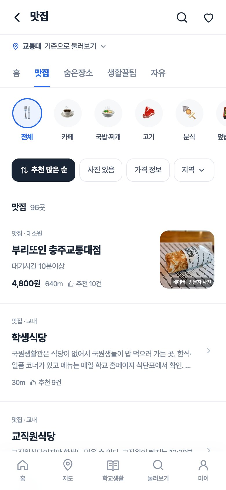
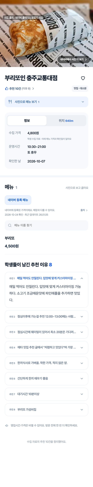
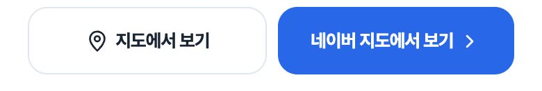
네이버 지도에 추천 장소를 올렸습니다.
지역별로 묶어서 보고, 가까운 곳을 찾습니다.
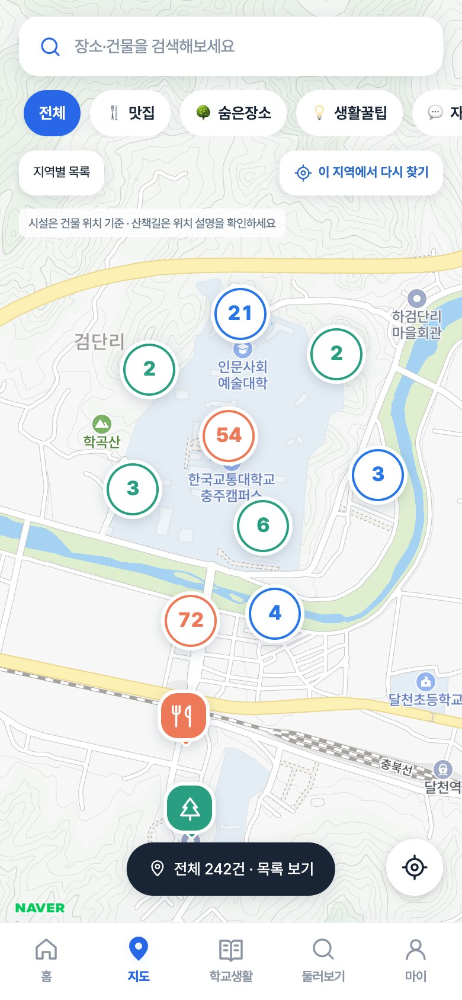
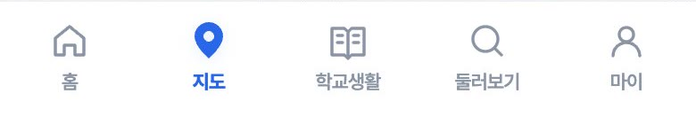
학생증, 학식, 통학버스, 와이파이처럼
자주 묻는 안내를 주제별로 모았습니다.
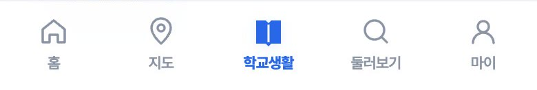
학생들이 추천한 맛집 중에서 한 곳을 골라 줍니다.
가격과 거리로 좁힐 수도 있습니다.
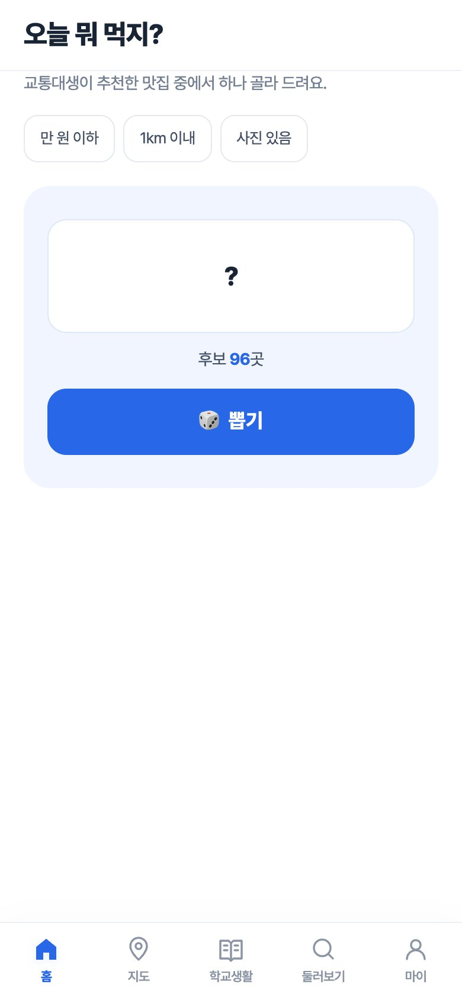
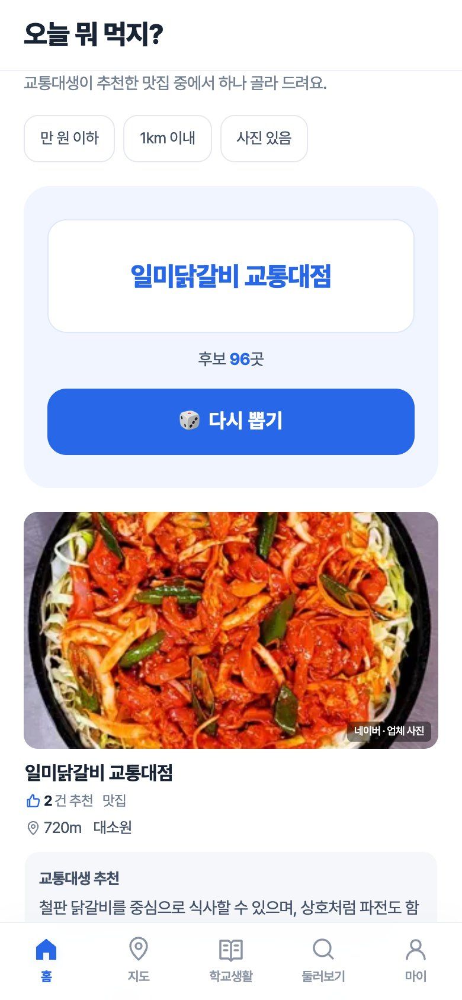
인스타그램 돋보기처럼 사진을 넘겨 보다가
끌리는 곳으로 바로 들어갑니다.
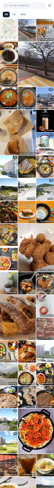
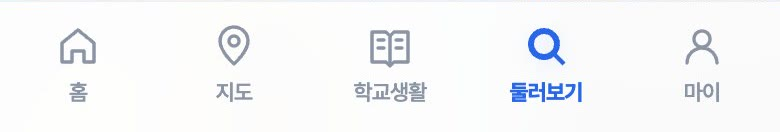
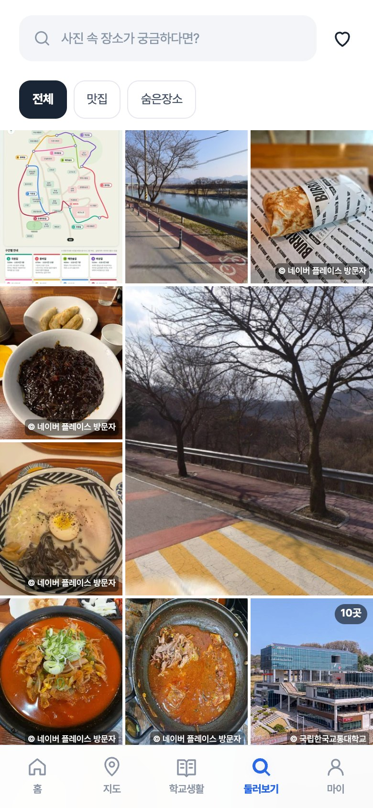
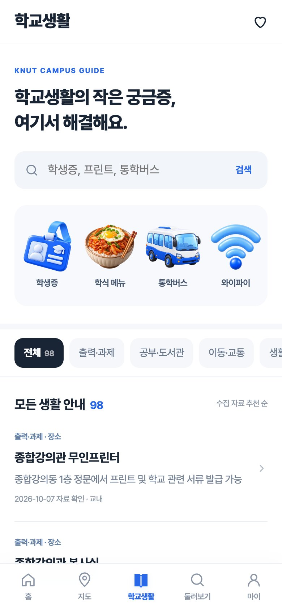
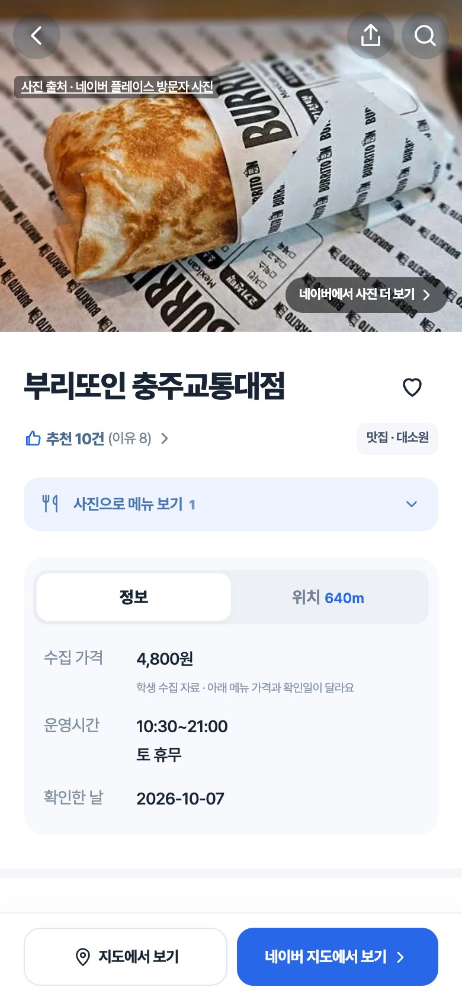
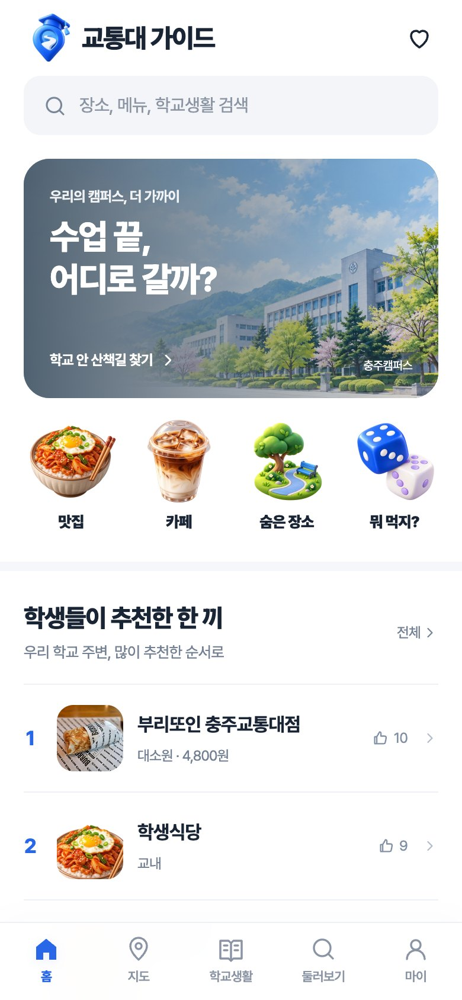